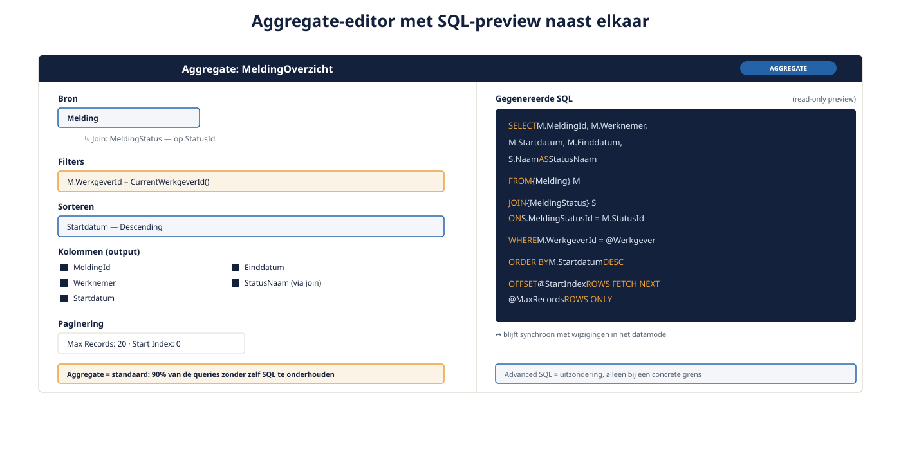

Deel 6 — Aggregates en data ophalen
Slidedeck · Ductus-cursus OutSystems · Niveau 1 — Fundament · deel 6 van 30 · 13 slides
Slide 1 — Title: OutSystems: Fundament
OutSystems: Fundament
Deel 6 — Aggregates en data ophalen
Slide 2 — Bullets: De Aggregate
De Aggregate
- Visuele querybouwer: filters, sorteringen, joins
- Genereert geoptimaliseerde SQL
- 90% van je queries zonder zelf SQL te onderhouden

Slide 3 — Section: Wanneer een Aggregate niet volstaat
Wanneer een Aggregate niet volstaat
Slide 4 — Bullets: Advanced SQL
Advanced SQL
- Voor concrete grenzen, niet als snelweg
- Buiten automatische optimalisatie/synchronisatie
- Vuistregel: eerst Aggregate proberen, dan pas overstappen
Slide 5 — Opdracht: Opdracht 6.1 — Aggregate of Advanced SQL?
Opdracht 6.1 — Aggregate of Advanced SQL?
Drie vragen over Verzuimmeldingen.
→ Werkboek 6.1
Slide 6 — Section: Paginering
Paginering
Slide 7 — Statement: Paginering is een gewoonte.
Paginering is een gewoonte.
Geen reactie op een probleem.
Slide 8 — Opdracht: Baan A / Baan B
Baan A / Baan B
A — Aggregate + paginering in Service Studio
B — Zelfde opbouw in ODC Studio
→ Werkboek, eigen baan
Slide 9 — Bullets: Veel Advanced SQL nodig? Kijk naar je datamodel
Veel Advanced SQL nodig? Kijk naar je datamodel
- Vaak geen tekortkoming van de Aggregate
- Signaal dat het datamodel niet aansluit op de vraag
- Overweeg een extra attribuut of rapportage-entity
Slide 10 — Table: Databasetoegang: O11 versus ODC
Databasetoegang: O11 versus ODC
| O11 | ODC | |
|---|---|---|
| Aggregate/Advanced SQL | Functioneel identiek | Functioneel identiek |
| Externe database via Advanced SQL | Vaak mogelijk | Primair platformbeheerde database |
Slide 11 — Opdracht: Reflectieopdracht 6.2
Reflectieopdracht 6.2
"Paginering pas later toevoegen" — wat zijn de risico's?
→ Werkboek 6.2
Slide 12 — Bullets: Kernpunten deel 6
Kernpunten deel 6
- Aggregate = standaard; Advanced SQL = uitzondering voor concrete grenzen
- Paginering vanaf het begin, niet als reactie
- Veel Advanced SQL nodig → kijk eerst naar het datamodel
- O11/ODC: Aggregate-mechanisme gelijk, externe DB-toegang verschilt
Slide 13 — Section: Volgende deel: Schrijfkant, formulieren en validatie
Volgende deel: Schrijfkant, formulieren en validatie